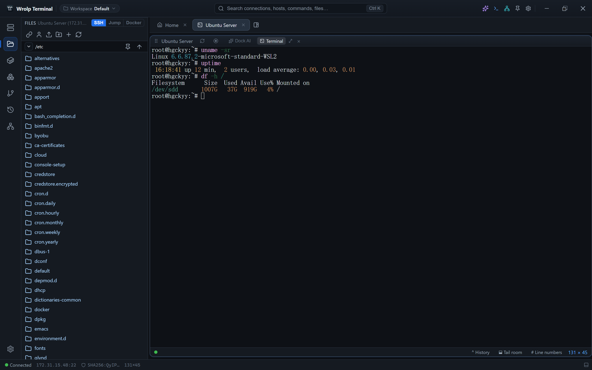

Remote file browsing
- A remote file tree with directory listing, read, write, rename, delete and create-directory operations.
- Upload and download over SFTP (
russh-sftp), reusing the same SSH session channel as the terminal. - Local and remote browsing share the
RemoteFsabstraction, so local and remote panels behave alike.

/etc beside the terminal that carries the session.Transfer queue
Every queued file is its own row, showing completed bytes against the total and the live transfer speed.
- Directories and drag-and-drop uploads are walked once on the Rust side with
walkdir. - Progress is reported in 4 MiB chunks; single-file uploads use 64 KB chunks.
- Progress arrives through the
transfer-progressevent.
Pause, resume and cancel
- Transfers support pause and resume.
- Cancelling an upload cleans up the partial remote files created by that upload.
- Files that already completed stay in place.
- Target files that existed before the upload are not deleted.
Built-in network file tools
Besides SFTP, the application ships file-transfer tools that run from the same window:
- FTP server with PASV and EPSV modes.
- HTTP/HTTPS file server with one-click generation of a self-signed certificate.
- TFTP server.
- FTP client supporting no TLS, explicit TLS and implicit TLS.
- TFTP client.